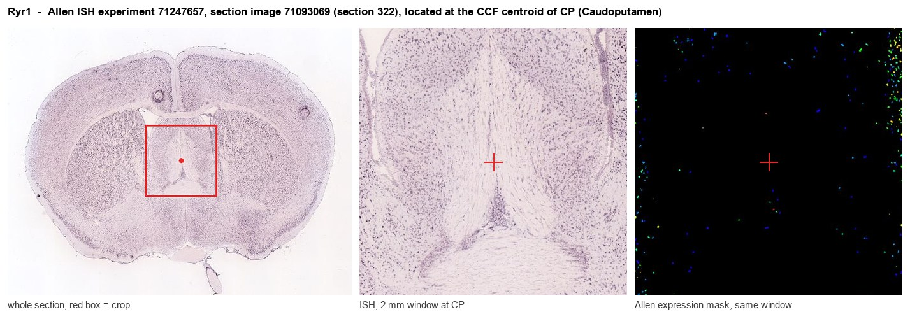
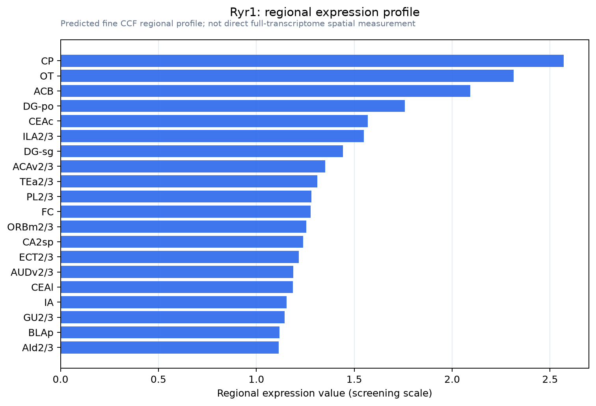

Ryr1
Ryanodine receptor 1 (RYR-1) (RyR1) (Skeletal muscle calcium release channel) (Skeletal muscle ryanodine receptor) (Skeletal muscle-type ryanodine receptor) (Type 1 ryanodine receptor)
Spatial tier: REGION_BIASED · Class: ION_CHANNEL · Top region: CP (Caudoputamen) · Positive regions: 38/554
Function in CP: evidence, prediction, innovation
- Gene function
- Ryr1 encodes ryanodine receptor type 1, a homotetrameric calcium-release channel of the endoplasmic and sarcoplasmic reticulum. In skeletal muscle it is gated mechanically by the Cav1.1 voltage sensor; elsewhere it mediates calcium-induced calcium release, amplifying calcium entry and shaping cytosolic and nuclear signals. RYR1 mutations cause malignant hyperthermia; dantrolene is its clinical inhibitor.
- Region function
- The caudoputamen is the dorsal striatum, where direct- and indirect-pathway spiny projection neurons plus cholinergic and parvalbumin interneurons implement action selection, habit learning and dopamine-dependent reinforcement.
- Published in this region
- expression only No CP study resolves the Ryr1 isoform specifically. Ryanodine-receptor immunoreactivity occurs in striatal spiny neurons and, unlike IP3 receptors, also in cholinergic and parvalbumin interneurons (Martone 1997), and Mandikian et al. 2014 found RyR clusters juxtaposed to plasma-membrane Kv2.1 clusters most prominently in indirect-pathway spiny neurons; Allen ISH gives moderate Ryr1 signal in CP (energy 7.3-9.9).
- Predicted function
- Prediction: Ryr1-mediated calcium-induced calcium release in caudoputamen neurons should amplify depolarisation- and mGluR-evoked calcium at subsurface cisternae, feeding adjacent Kv2.1 and calcium-activated potassium channels and tuning afterhyperpolarisation and CREB-dependent plasticity. Striatal Ryr1 knockdown or local dantrolene is predicted to shrink the slow AHP, increase burst firing in indirect-pathway cells and impair habit learning.
- Innovation
- ★★★★☆ 4/5 Almost all neuronal ryanodine-receptor work targets RyR2 and RyR3, leaving Ryr1 in striatum untested despite clear ISH expression and an approved blocker.
- Tools
- Dantrolene (RyR1-preferring, brain-penetrant), ryanodine and caffeine as probes; Ryr1 knockout and malignant-hyperthermia knock-in lines from the muscle field; isoform-specific anti-RyR1 antibodies; AAV-CRISPR knockdown with Drd2-Cre or Adora2a-Cre.
- References
Direct evidence located at the region

Allen ISH experiment 71247657, section image 71093069 (section 322): the section that contains the CCF centroid of Caudoputamen according to the Allen image-to-atlas alignment (reference_to_image), with a 2 mm window around that point. Left: whole section, red box = window. Middle: ISH signal. Right: Allen's expression-mask view of the same window. open this image in the Allen viewer
Direct spatial evidence

Regional expression figure

Predicted WMB × fine-CCF profile; not direct full-transcriptome spatial measurement.
Spatial profile
Evidence and specificity
- Evidence status
- PREDICTED_FINE
- Direct sources
- None; predicted localization only
- Exclusive threshold
- 12 positive regions out of 554
- Spatial specificity
- 0.278
- Top-region fraction
- 0.044
- Filter status
- PASS
Interpretation limits
- Cell-type-to-region projection is imputed expression, not direct spatial measurement.
- Adult reference atlases do not establish stability across age, sex, strain, state, or disease.
- Transcript abundance does not guarantee protein abundance or genetic-tool performance.